Backpacking Drone
Personal Project

Backpacking Drone
I have been interested in drones for a few years now and have owned a few toy drones myself. I have always wanted to do aerial photogrpahy, but have found that the cost of these drones was quite high. With the open source community now serving all the capabilities I was looking for- autonomous flight, altitude hold, return to launch, and telemetry - I decided to start on my own. I began with a kit from Aliexpress which seemed to have all the basic pieces for a good price. I have since learned how to optimize the build for the lowest price possible, and have decided to build my drone from "scratch" seeing as how I have many of the tools I need at my disposal at school.
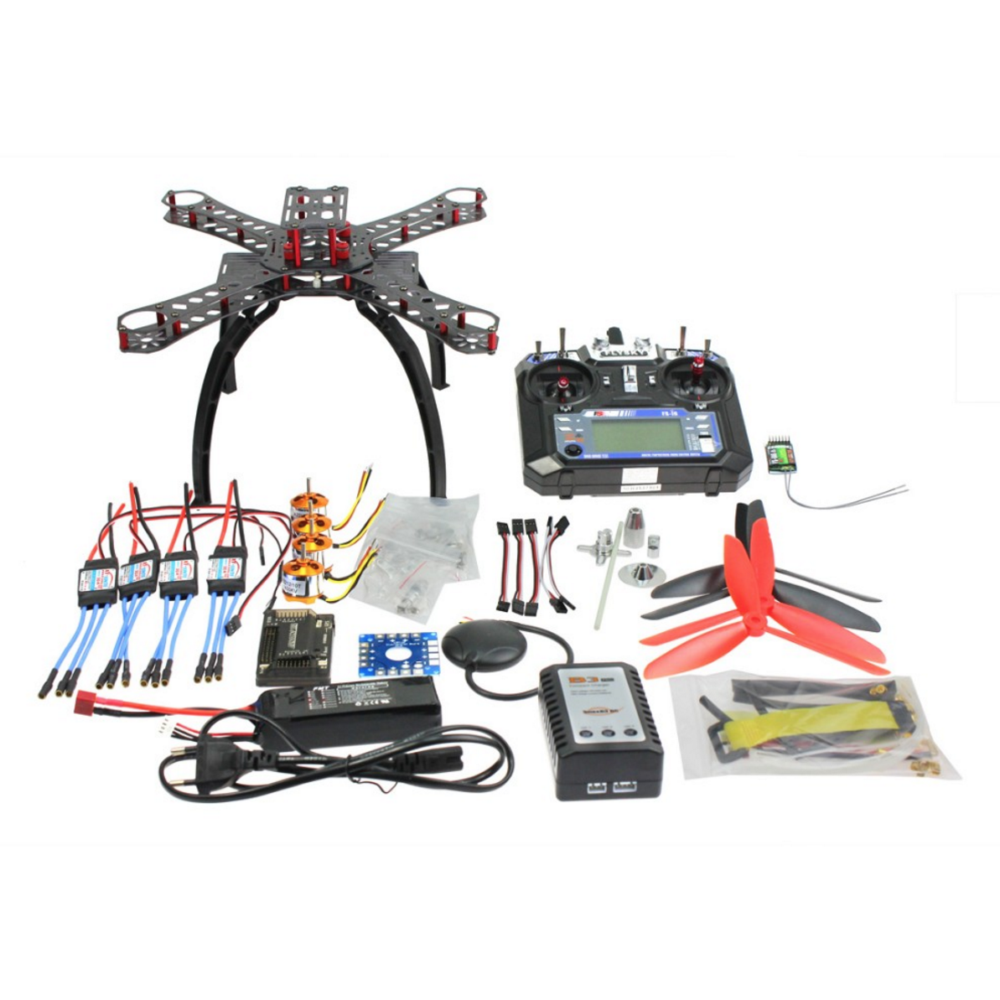The Kit
- 1 "Carbon Fiber Alien Across Mini Frame"-320mm(Estimated)
- 4 Presumably A2212 XXD 1400KV motors
- 2 CW, CCW 7045 3 Blade propellers
- 4 XT-Xinte 30a ESCs
- 1 Cloned 2.8 APM controller with built in compass
- 1 6m GPS with L5883 Cable
- 5 Servo Lead Extensions Male to Male
- 1 Power Distribution Board
- 1 Folding Antenna Mount
- 1 Flysky FS-i6 6CH 2.4G AFHDS 2A LCD Transmitter
- 1 Flysky iA6 receiver
- 1 2200 Mah Lipo Battery, 20C
- 1 IMAX B3 Pro compact Balance charger
- 1 American plug adapter
- 1 Tool Kit (Some zip ties, a battery strap, and an action camera strap
Unfortunately the price has changed from its original $165 price. The kit was not a bad price for having everything it had. Looking back, I could have saved an additional $20 by purchasing everything separately and possibly more by foregoing a kit with a frame to use household materials instead. Only with more experience have I been able to get a better sense of prices in this hobby, and I continue to improve my deal finding.
What I learned from buying a "RTF" kit
I spent a couple weeks watching hours and hours of video online to prepare me for my venture into DIY multirotors. My best resource for this was Andy RC's channel. Specifically, how to build a cheap quadcopter. Andy is full of knowledge and not afraid to explain things mundane to those with more experience. I also recommend the channel Painless 360, especially for those looking to set up their APM. Lastly, I recommend Oscar Liang's website for written tutorials and even mroe in depth info. Despite these channels being great resources, I still managed to have quite a difficult time setting up the quad as even the greatest amount of detail in these videos does not tell you everything to know.
For example, my "RTF" kit came without a power module, something critical to supplying power to the flight controller. Had the videos covered this piece, I may have purchased a different kit which might have included it. I also did not understand that in order to do autonomous flight, one needed the telemetry package unless they are comfortable with being unable to change the route once in the air. It took resources such as Oscar Liang's blog to explain these more clearly, in addition to more issues such as why I should change my ESCs from BEC to OPTO. All in all, I recommend doing something like this with the guidance of someone who has experience in building drones, DIY or not. These resources have been my best for learning how to improve my design.
Seeing as how the frame was not optimized for my use case, I decided the included frame in the kit would simply be a base for me to get comfortable with building multirotors. However, this plan too ended up being corrupted by time constraints.
The Upgrades
For the original kit
- Power Module with T type connector (5v to flight controller)
- 2 Axis Gimbal (I would have gone for the 3 axis except to save for costs, and I was originally intending to use the stabilized camera for RPV also, and would not be able to adjust the yaw with the necessary attached cables.)
- Servo Lead Extensions (Used to connect to the Tx from the Sj4000 clone)
- JST connectors(These were used to power the Tx and Gimbal from the PDB as each came with these connections)
- Eachine 600mw TS835 Tx(This one produces 5v to power the Sj4000 unlike the TS832)
- 433MHz telemetry kit (I had read that it may receive less interference in the areas I would be travelling to)
- FX 4.3in 32ch Receiver (The cheapest all in one FPV monitor I could find. I figured the smaller screen size in comparison to the 7" standard could help keep the size of everything down.)
- 10 Pairs CW, CCW 7045 3 blade propellers
Many of these items can be found cheaper on Aliexpress or Ebay. Some of the choices of where to purchase from were made by prioritizing shipping speed, necessitating that the sender be from the contiguous states.
Custom Build Frame Pieces
- 2 16mm diameter carbon fiber tubes, 500mm
- 16 16mm brackets
- 4 Tarot Position holders
- Carbon Fiber Motor Mount Plates
Additional Pieces(Owned before the start)
- Sj4000 Clone(For FPV, Must have TV Out)
- Eken H3 (For use on Gimbal)
The Custom Build
As mentioned above, it was understood that the frame that came in the kit would not be useful for me while backpacking. The reason for this is that it does not easily pack down in size as every piece is rigid and many of them protrude quite a bit, something that does not lend itself well to packing. While I knew that I would not be using this frame during my trip, I had not yet determined that I would be building my own frame. Determining this resulted from me researching all options available. The methodology for determining which frames were best was by size relative to footprint, with a mazimum footprint of no larger than a foot in any dimension. I figured this could be the maximum size I could fit in any bag or backpack, though I am sure even this length could be beyond the capacity of many bags. The reason for prefering a larger size to a smaller size was the ability to expand the drone for future capabilities as smaller drones have less lift and can carry less modules.
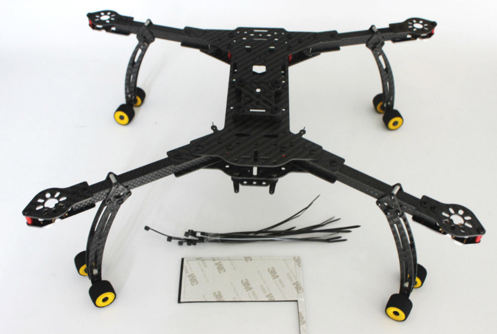The DH410 Frame $106, 222g
This thing is nearly perfect. What makes it so special is that the entire frame folds down to 330mmx160mmx60mm with 10 inch blades. Even the landing gear folds onto the arms. The price is slightly expensive, but considering the time it takes to model and the cost of materials, this frame is not a bad deal. A 410mm base allows for a quad with up to 3kg of thrust with the right motors, meaning more expandability.

ImmersionRC XuGong V2 Pro $169.15 ($143.65 If you wait for Hobbyking to offer you a popup discount), 96g
This thing is light and small. It folds in a way very different from the DH410 and has a different profile. This holds the stabilized camera on the front as opposed to below the frame. The folded dimensions are 240mmx300mmx140mm, making its footprint slightly larger, which makes sense considering it is a 460mm frame. The build quality is sound using anodized aluminum and carbon fiber. The negatives I can see are the lack of landing gear, price, and the fact that the arms can not fold slightly further.
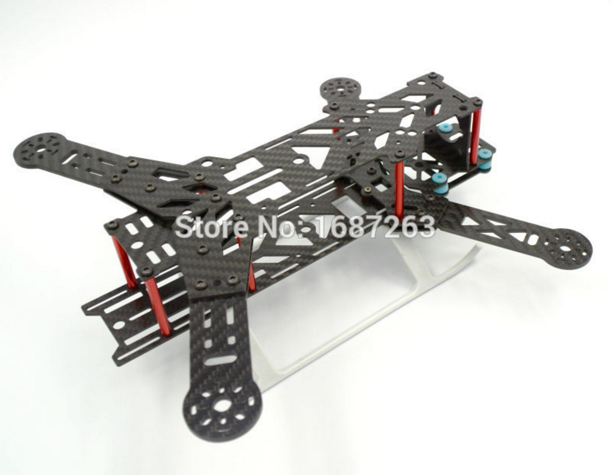BX300 Folding Frame $26.88 (Seen as many other names online), 154g
This frame is even smaller than the one that came to me in the kit; however, I wanted to be very open minded about the size quad I could use. While I typically always want to go bigger, the nature of a backpacking drone is one that prefers smaller. Just how small one could go with a traditional store-bought gimbal was my main question and here is the answer. As such, a 300mm quad can fully get the job done, but it may limit battery size and the amount of other components one can mount on the quad due to size and weight restrictions. Because I want to do autonomous flight and want to be able to travel longer distances, I favor a frame that can allow me to carry a bigger battery. Additionally, the clearance below the aircraft is not large enough for a gimbal. While the video above shows that one can mount a gimbal above a multirotor, I have opted not to do so in order to clear the shot of propellers.

HobbyKing Alien 560 Frame $73.04 ($67.82 if you wait), 520g
This frame is very similar to the DH410 in design. It is of larger size, meaning it can carry fairly heavy equipment. The folded size is listed at 240mmx300mmx200mm.
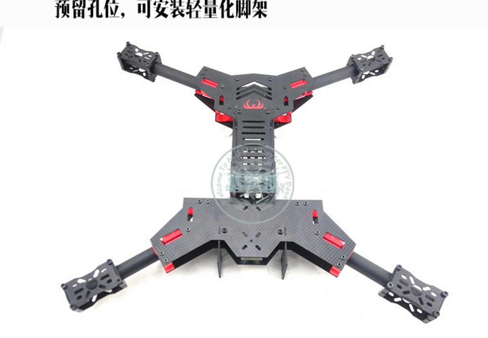HF450 Alien $119, 376g
This is simply another option to throw into the mix. One of the benefits of this frame is that it comes ready for X8 configuration. It also appears to be very robust compared to some of the other designs. I was unable to find information as to its size when folded.
Back to the Build
After looking at all the options I determined the best frame for me was the DH410. However, I did not want to spend the money and instead opted to design my own frame. Using the DH410 as a reference as well as the Mokaframe. I found that the DH410 had the compact form I wanted while the design elements of the Mokaframe made for an extremely easy and cheap build. The mokaframe at a glance makes me question why anyone would want to buy any sort of frame except for the fact that not everyone has access to a laser cutter and modeling software.
I recommend purchasing the same pieces I did on Aliexpress to save cost, but seeing as how time is winding down for me to get enough experience flying my quad before my trip, I opted for Amazon and domestic Ebay prices to expedite the process.
Pictures
The Arm Position Holder
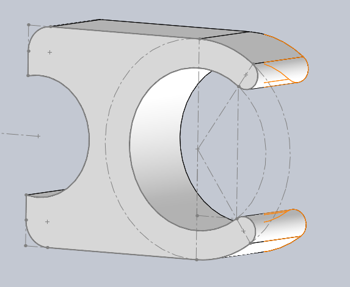 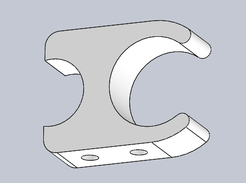These pieces ultimately ended up being purchased rather than made. I believe they can and should be made by any true DIYer, but I purchased these before having experience with inlaying threaded mounts into my 3d printed piece. I imagine they are not too difficult to get right except for the piece requiring just enough give to slide the 16mm arm through the smaller opening. I imagine there are some filaments available with these qualities.
Motor Mount Bracket
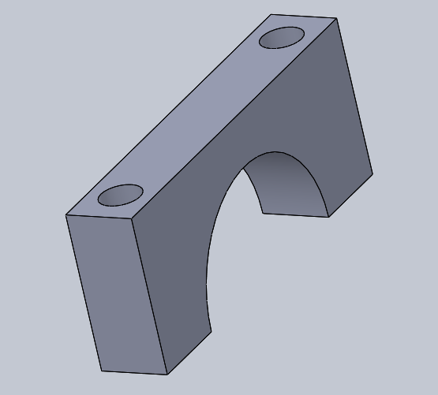 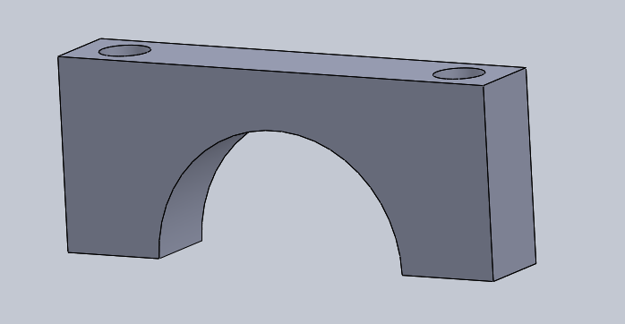These can certainly be made with a 3d printer. I opted for purchasing aluminum CNCed versions for looks and rigidity.
Motor Mount
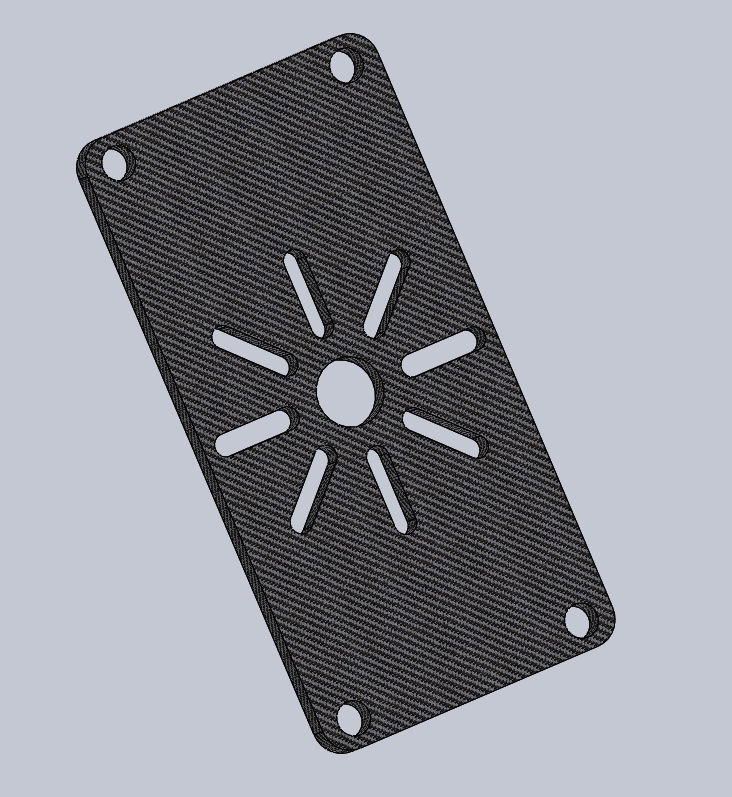I modeled these in hopes of using the available acrylic at my school for the mounts. Unfortunately, the thickness of the acrylic made it unsuitable for use with the screws I was using for the motor mounts as there was less than twice the thickness of the acrylic left in the length of the screw, not enough to twist a nut on.
Original Frame Base
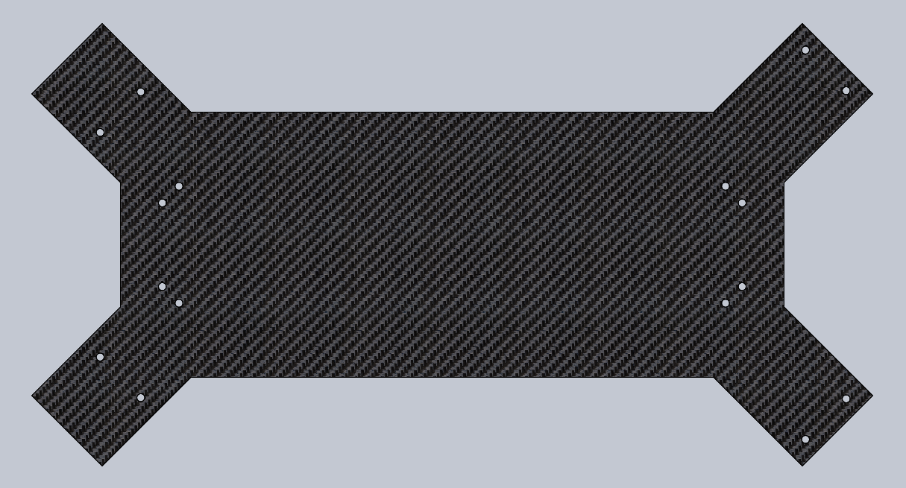This has since gone through atleast 6 revisions for adding new precut holes and optimizing space efficiency. This design was not fit to fold correctly and did not have prefabricated spots for additional support.
Original Arm Design
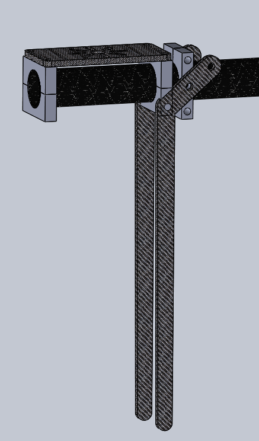 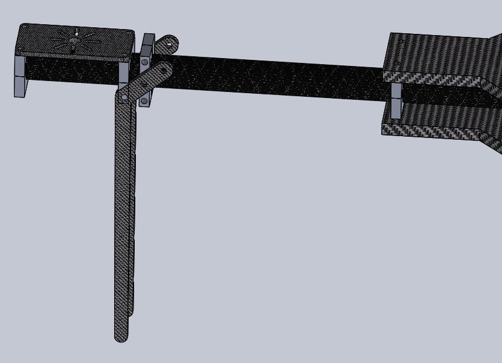 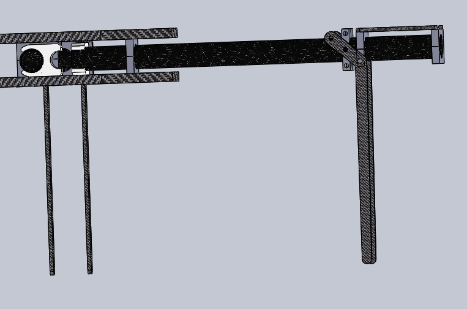I have not fully built up the design but expect to keep to this look.
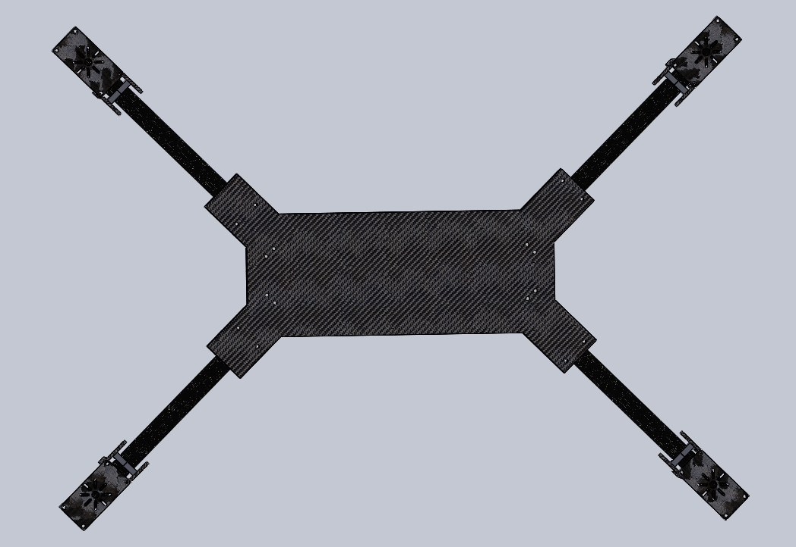 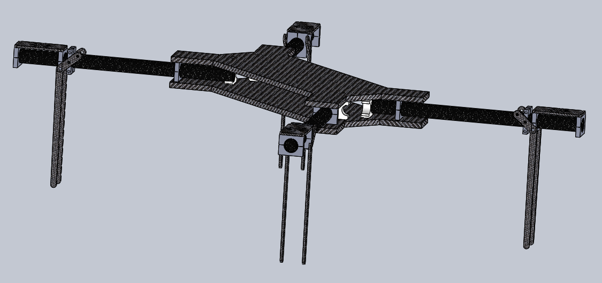
I will continue to post pictures as the pieces are finished(The raw materials have yet to arrive).